By crop
Twelve crop pages, covering all 23 seeded crops.
Each page answers the same questions: what is in the catalog, which cultivars carry a plan template, what the growth stages are, which decision trees are written for it, and what is still missing.
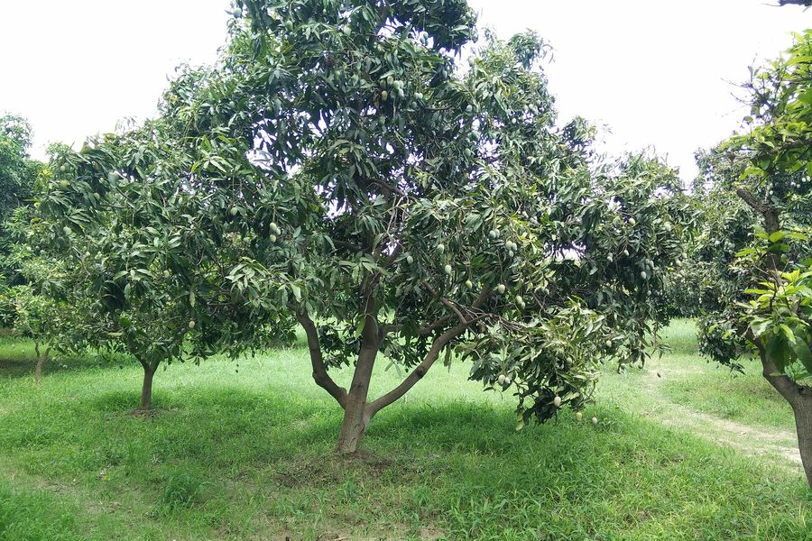
مانجوMango
6 decision trees, 6 stages, 6 cultivar plan templates. The deepest crop in the platform.
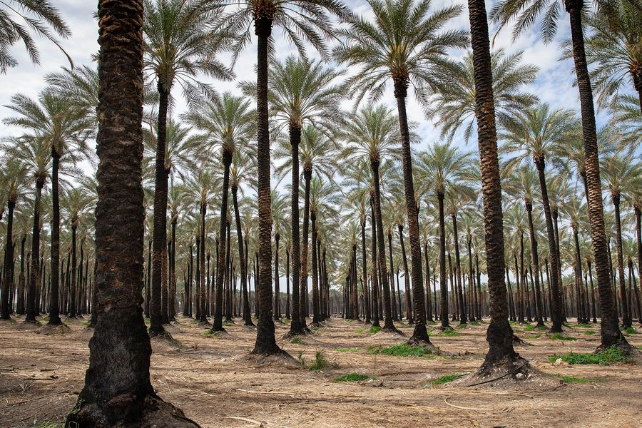
نخيل البلحDate palm
7 cultivar plan templates, a 7-stage model from dormancy to tamar, and 3 decision trees.
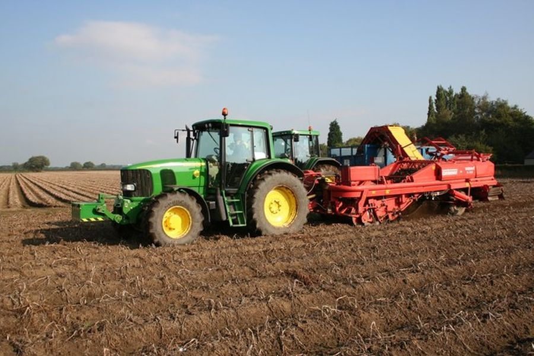
بطاطسPotato
A days-from-planting stage model, season templates, and 6 rules including the three petiole tests.
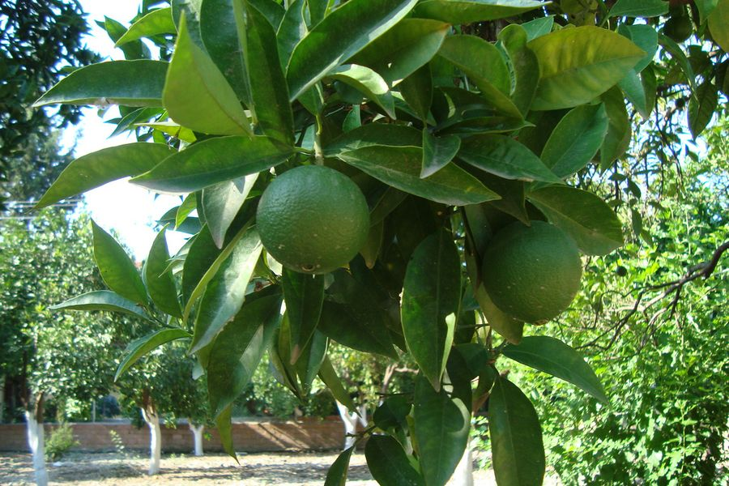
موالحCitrus
Orange and mandarin, with a cultivar path already in the taxonomy and no rules written yet.
 زيتون
زيتونOlive
In the catalog as a perennial tree crop. Read with the general vegetation rules.
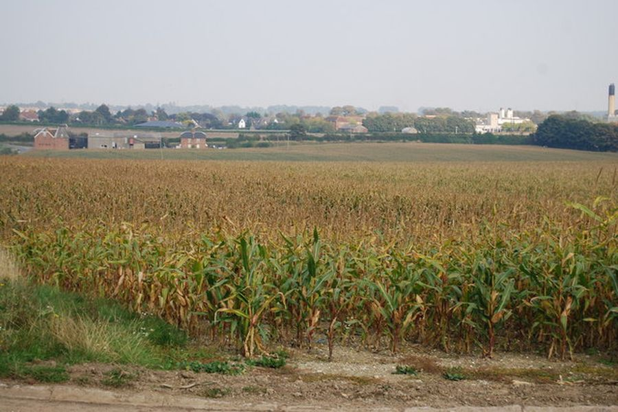
حبوب ومحاصيل حقليةCereals and field crops
Wheat, maize, rice, and the oilseed, legume and fodder crops. Growing days and heat sums are seeded for each.
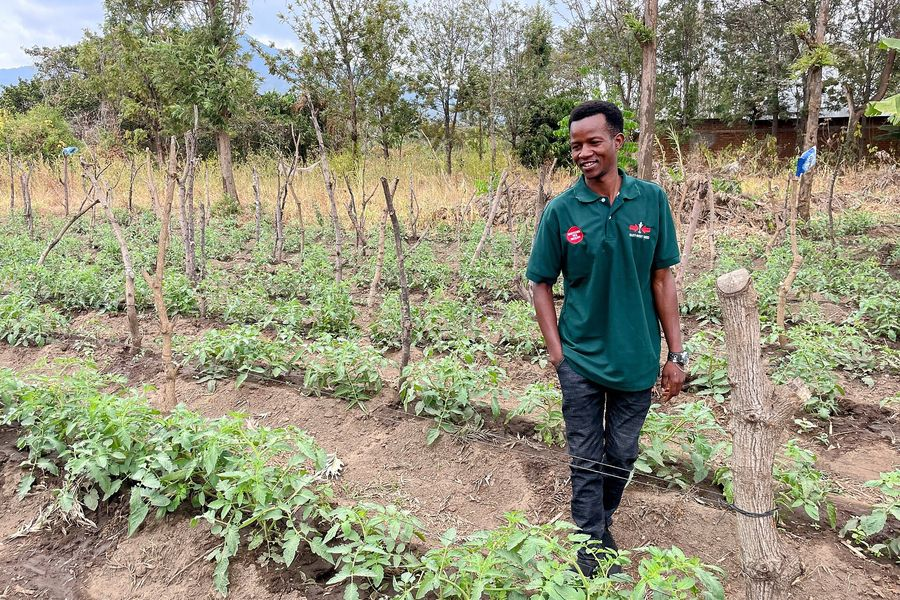
طماطمTomato
In the catalog with a taxonomy path and transplant attributes for seedlings.
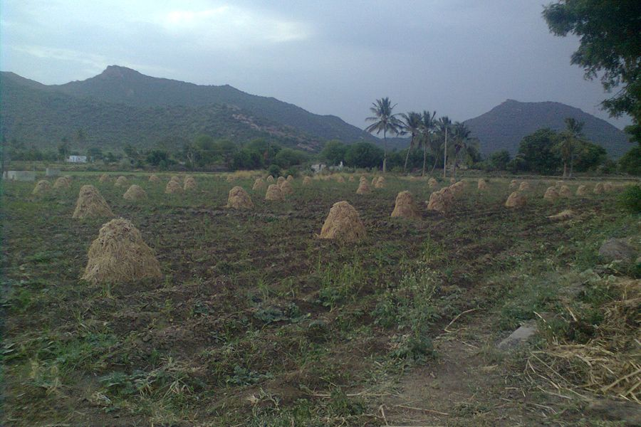
بصل وثومOnion and garlic
Two long-season bulb crops, seeded with their growing days and heat limits.
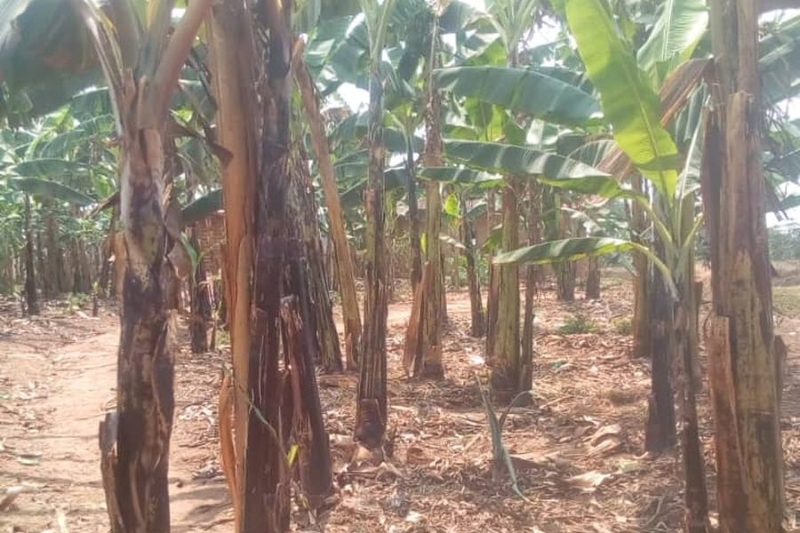
موزBanana
A perennial in the catalog, watched with vegetation and water indices.
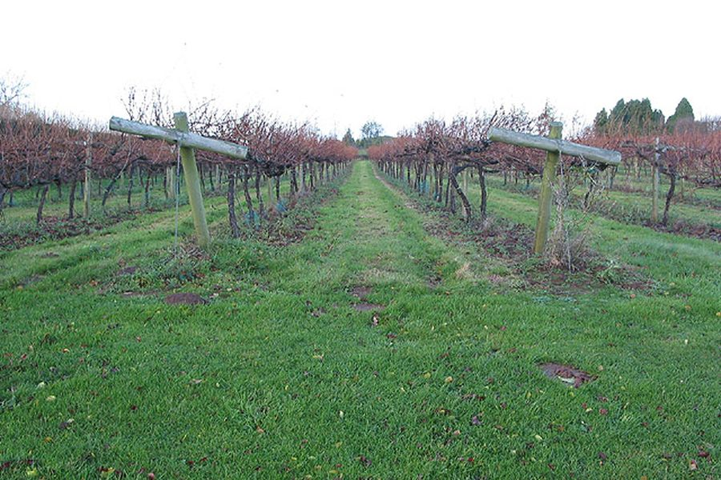
عنبGrape
A perennial vine in the catalog, read with the red edge and moisture indices.
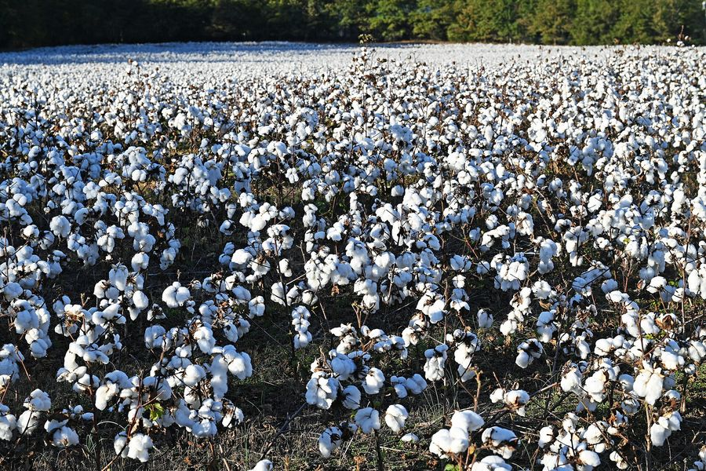
قطنCotton
The one fibre crop in the catalog, and a good fit for the base 15 °C heat sum.
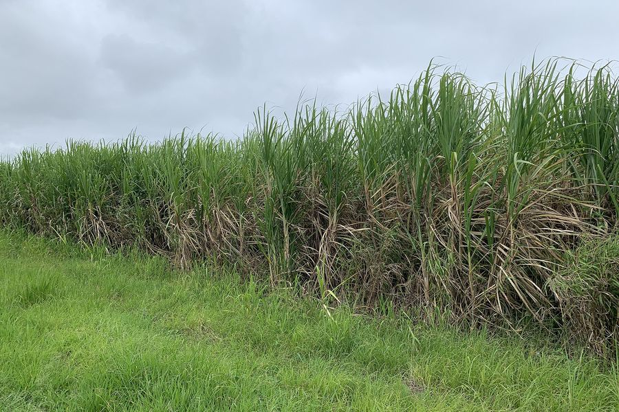
محاصيل سكريةSugar crops
Sugarcane and sugar beet. One perennial, one annual, both long season.